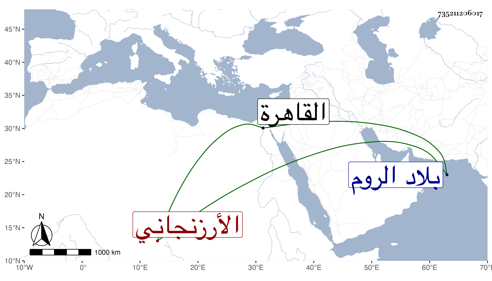

0902Sakhawi.DawLamic.ITO20230111-ara1.EIS1600.735211206017
Biography ID: 735211206017
183
علي الأسطا الأرزنجاني والد يعقوب شاه الآتي . قدم من بلاده إلى الروم ثم إلى القاهرة في أول سلطنة المؤيد واختص بخدمة الناصري بن البارزي ثم انتقل لبيت السلطان وتقدم في القوس علما وعملا بحيث عرف بالأسطا ، وحج سبع مرار وجاور وعمر نحو المائة حتى مات وكان خيرا من ولده .
